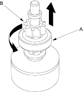

Overruning Clutch Inspection
- Slide the overrunning clutch along the shaft. Replace it if it does not slide smoothly.
- Rotate the overrunning clutch (A) both ways.
Does it lock in one direction and rotate smoothly in reverse? If it does not lock in either direction or it locks in both directions, replace it.

- If the starter drive gear (B) is worn or damaged, replace the overrunning clutch assembly; the gear is not available separately.
Check the condition of the flywheel or torque converter ring gear if the starter drive gear teeth are damaged,
- Reassemble the starter in reverse order of disassembly.